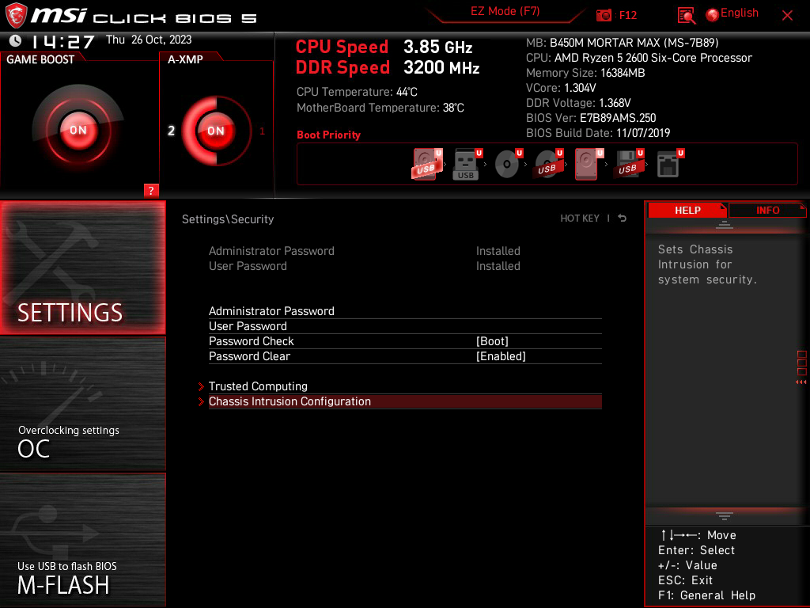

Este documento ofrece una guía paso a paso ilustrada con capturas de pantalla para asegurar la BIOS/UEFI de un dispositivo con el objetivo de minimizar los riesgos que podría conllevar el no disponer de las suficientes medidas de seguridad.
En este caso aplicaremos las medidas de seguridad a una placa base MSI Mortar Max B-450M con UEFI.
En cualquier máquina el primer software que se ejecuta es la BIOS (Basic Input Output System), o UEFI (Unified Extensible Firmware Interface) lo que hoy por hoy más comúnmente encontramos en los equipos mas modernos, que consiste en una versión más moderna con características que mejoran la experiencia de usuario como mejores interfaces gráficas y funciones más avanzadas.
Principalmente y sin entrar en detalles técnicos la BIOS/UEFI se encarga de reconocer e inicializar el hardware entre otras cosas.
Un usuario con los conocimientos adecuados es capaz de saltarse la seguridad y por tanto vulnerar un equipo a través de la explotación de fallas y carencias en la seguridad de la BIOS/UEFI, esta guía aprenderemos algunas medidas para evitar en la medida de lo posible que esto ocurre.
En las siguientes secciones detallaremos el proceso.
Para configurar opciones de seguridad de nuestra BIOS/UEFI, primero debemos acceder a la misma.
Para ello hacemos lo siguiente:
Pulsamos repetidamente la tecla SUPR nada más encender el equipo. En otros modelos de placa base se accede pulsando repetidamente una tecla al iniciar que habitualmente suele ser F10, F1 o F2.
Si todo va bien debería de aparecer una pantalla similar a esta si tenemos una UEFI:
Y similar a esto si tenemos una BIOS:
Nota: Existen UEFI que aparecen con una interfaz gráfica de aspecto anticuado.
En las secciones siguientes partiremos de esta pantalla para realizar distintas configuraciones de seguridad que nos ayudarán a minimizar el riesgo a lo que el equipo está expuesto.
Una de las primeras cosas que podemos hacer es establecer una contraseña de administrador que se solicitará cuando queramos entrar a hacer cambios en los parámetros de la BIOS.
En nuestro caso como se mencionó en la introducción será una UEFI, concretamente de la placa MSI Mortar Max B450M.
Para configurar una contraseña para la UEFI podemos seguir estos pasos:
- Nos vamos a ajustes desde la pantalla principal de la UEFI haciendo click sobre el botón "settings":
- Una vez dentro elegimos la opción seguridad:
- En esta pantalla podemos comprobar que no existen ni contraseña de administrador ni de usuario en el texto que se encuentra sobre las opciones disponibles. De la contraseña de usuario hablaremos en la siguiente sección. De momento, en esta pantalla marcamos el área "Administrator password" y la seleccionamos.
- Aparecerá un diálogo para introducir una contraseña, simplemente la introducimos.
- En este punto ya tendremos establecido una contraseña de administrador para la bios. En la captura podemos ver como la línea "Administrator Password" arriba de las opciones se muestra como "Installed".
- La siguiente vez que intentemos entrar a la UEFI podremos comprobar como nos requiere contraseña

Nota: La contraseña de administrador solo se requerirá cuando se intente entrar a la BIOS/UEFI
La contraseña de usuario nos servirá para requerir una contraseña al equipo completo, no solo al acceder a la bios, incluso antes de llegar a un posible menú de arranque.
Esto añadirá una capa más de seguridad que, en conjunto con la contraseña de la UEFI, nos ayudará a minimizar los riesgos de que el equipo sea vulnerado.
En nuestro caso podemos establecer una contraseña de usuario de la siguiente forma:
- Accedemos a la sección de seguridad de nuestra UEFI de la misma forma que en la sección anterior.
- Una vez hayamos llegado a Settings/Security, donde introdujimos la contraseña de administrador, seleccionaremos esta vez User Password y nos aparecerá de nuevo una caja de diálogo para introducir nuestra contraseña:
- Una vez establecida podremos ver como el parámetro "User Password" se establece en "Installed".
- Con la contraseña de usuario establecida, lo ideal es activar la opción "Password Check" para que nada más encender el ordenador nos pida la contraseña, impidiendo el acceso al GRUB
- En este punto ya deberíamos tener la contraseña de usuario establecida, de manera que, cada vez que iniciemos el equipo nos requerirá la contraseña para acceder incluso al GRUB:
Nota: Este equipo parece tener un pequeño fallo de seguridad el cuál consiste en que, cuando se introduce la contraseña, se visualiza el último número que has introducido, de manera que si alguien te ve introducir la contraseña fácilmente puede robarla. Es conveniente que al escribir contraseñas lo que escribas aparezca formateado con caracteres como * o que directamente no aparezca lo que escribas.
Podríamos encontrarnos la situación de que un atacante con intención de vulnerar nuestro equipo se encuentre que hemos aplicado medidas como la contraseña de administrador y de usuario para poder tener acceso.
Si es ingenioso podría intentar saltarse esto intentando hacer un arranque desde un dispositivo USB con por ejemplo alguna distribución de Linux que permite operar sin haberse instalado en el disco duro.
Esto podría ocurrir sí el orden de arranque está descuidado y configurado para iniciar desde un USB u otro medio de arranque antes que desde un disco duro ( Por ejemplo aquí existe una ISO específica llamada Hiren's Boot que nos permitirá eliminar la contraseña de la BIOS ).
En mi modelo de placa no puedo desactivar específicamente el arranque USB, pero sí puedo desactivar una opción llamada "Legacy USB Support" para desactivar los USB en el arranque y la BIOS, aunque activando esta opción activada habrá que despedirse de usar teclado y ratón en la UEFI, ya ambos se conectan por USB, solo podríamos operar con un teclado conectado por el antiguo puerto PS/2.
Podemos seguir los siguientes pasos para desactivarla:
- Desde nuestra pantalla principal en la UEFI seleccionamos Settings:
- Nos vamos a Advanced

- Dentro de advanced seleccionamos "USB Configuration"

- Y simplemente marcamos la opción Legacy USB Support como Disabled:
Con esto habremos desactivado los puertos USB al iniciar la BIOS e intentar iniciar desde un USB no será una opción para un posible atacante.
También, para añadir aún más capas de seguridad, podemos modificar el orden de arranque de nuestros dispositivos para que, en casos no controlados, algún atacante logre iniciar desde su USB u otro medio debido a un mal ajuste en esta configuración.
Lo veremos en la siguiente sección.
Un orden de arranque no configurado adecuadamente puede provocar también varias fallas en la seguridad, como por ejemplo manipular físicamente el equipo aprovechando la prioridad de inicio desde cierto disco duro o por el arranque USB previamente visto.
Siguiendo estos pasos podemos modificarlo:
- En la UEFI de la placa Mortar Max B450M disponemos de una sencilla interfaz en el menú principal desde el cual podemos fácilmente reordenar los dispositivos arrastrándolos hacia la posición en el orden que más nos interese:
- Y tras reordenarlos, priorizando antes arranques desde discos duros que desde medios extraíbles, tan solo tenemos que guardar los cambios y ya habríamos cambiado el orden.
- También disponemos de la clásica opción de reordenar en Settings/Boot/
Esta placa tiene la función "Chassis Intrusion" que consiste en una función de algunas placas bases, por ejemplo el modelo Mortar Max B450M con el que se está desarrollando ésta guía, para crear un mensaje de notificación que nos informa de que alguien ha abierto el chásis o caja del ordenador.
Esencialmente consiste en un sensor que se conecta a un terminal específico de la placa base y detecta cuando se ha abierto nuestra caja.
Este es un ejemplo de cable simple de detección de intrusiones
Para activar esta función tan solo tenemos que hacer lo siguiente:
- Nos vamos a Settings/Security y buscamos "Chassis Intruson Configuration"

- Dentro simplemente activamos la opción y con eso lo tendríamos activado.
El chip TPM (Trusted Platform Module) es un coprocesador criptográfico, comunicado únicamente con el procesador, que puede almacenar claves de cifrado, cifrar contraseñas y archivos de forma más consistente ya que este chip ha sido especialmente diseñado para este propósito.
Nuestra placa base tiene una función para construir la clave de renocimiento (Endorsement key) para acceder al sistema. Esta clave sirve para autenticarse ante un servidor o servicio en la nube sin exponer la clave de cifrado principal del sistema (En caso de que usáramos Bitlocker, es la clave para cifrar y descifrar los datos).
Para activarla en nuestra placa base tenemos que hacer lo siguiente:
- Entramos a la BIOS y Settings/Security
- Elegimos Trusted Computing
- Y marcamos como enable la opción "Security Device Support"
- Y listo con esto ya tendríamos activada una de las funciones más destacables del chip TPM.
Con todas estas medidas hemos conseguido realizar un proceso de hardening adecuadamente en nuestra placa base y ahora un posible atacante se verá muy desesperado en caso de que intentase acceder a nuestro equipo de manera ilegítima a través de principalmente el arranque BIOS.